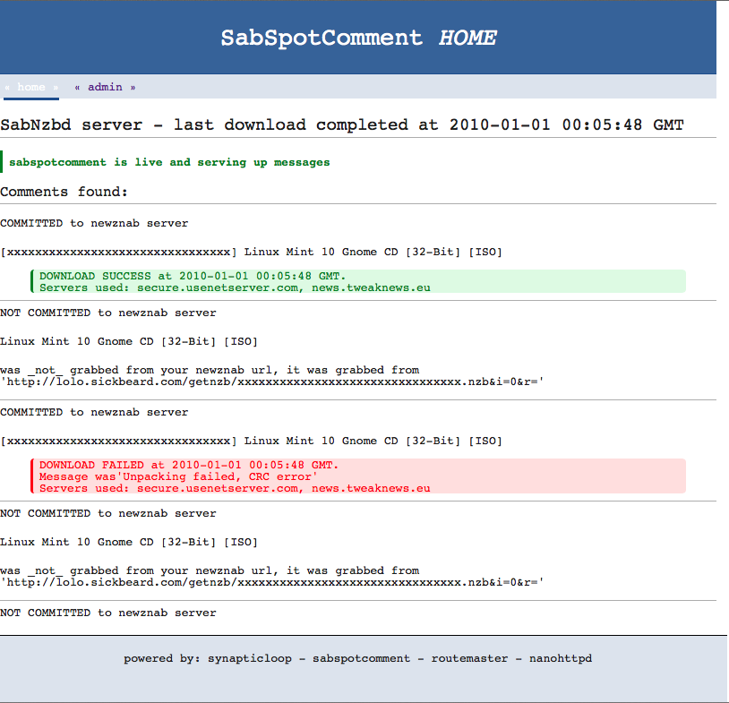

Welcome to sab spot comment
Don't you wish that there was a way to help out the community by automatically commenting on nzb articles as to whether they were successfully downloaded or not?
Wish no more...
sab-spot-comment to the rescue
By linking your:
- sabnzbd installation, and
- newznab host
You can automatically let the community know whether you had success for any or all of your downloads from your usenet servers.
Getting up and Running
You should be up and running in not time at all!
Requirements
- Java
Running
Download the sab-spot-comment.jar file.
On some operating systems you should be able to just double-click the jar file and all will be good, however, you may need to do the following:
- Open a console
- Change to the directory where you downloaded the jar file
- run the following command
java -jar sab-spot-comment.jarAt this point in time, you should be redirected to the administration page.
Just fill in the details and away you go.
Having troubles?
Perhaps you want to look at the Administration pages.